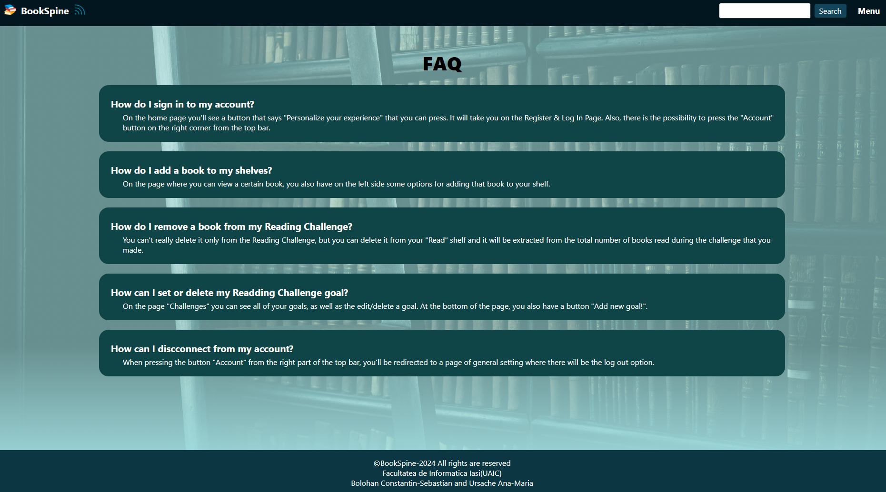

1. Introduction
1.1 Product Purpose & Scope
The purpose of our app is to bring customers the opportunity to organize all the books they read,
the ones they want to read and the ones they are currently reading. They also
can personalise their goals for a year or for a specific month. Users can be in different groups of
where participants give updates to specific books. The books themselves can be filtered by different
tags,
such as: author, year, edition, etc...
The main inspiration of the app is Goodreads, an app that has been on the market for a long time and is
used by all book lovers.
1.2 Document convensions
Within the application we mainly used different shades of the same colour,
in total there are about 10 shades (#ACEAEC, #01161E, #0c3742, #104547, #124559,
#0A2E36, #2a3738, #272D2D, #15555a, #496264).
If we want to highlight certain elements, we use bold.
As for the fonts used, I used only one font for each page: Verdana.
1.3 Intended Audience and Reading Suggestions
We designed the structure of the app to be accessible. We intended the app to be mainly
readers who want to organize their books and who want to find a community of lovers
of books (through groups), but also for those people who want to see certain
book reviews and different people's opinions.
1.4 References
The main inspiration: "Goodreads".
We were also inspired by the design made in Figma for the subject "Ingineria Programarii" by our group.
2. Overall Description
2.1 Description
Our project is a web application based on a custom REST/GraphQL API,
with the aim of facilitating progress monitoring and opinion/feedback in
on readings done either by a single user or a selected group
of individuals, such as a class of students or a literary club. Our system will manage the books,
organizing them according to
by various criteria, including category, author(s), publisher, year, edition, as well as relationships
to other
related literary works. We aim to provide a wide range of statistics, available for export
in open formats such as CSV and DocBook. Also, relevant announcements (such as new reviews
book reviews, new book releases of interest, or changes in the rankings of acclaimed works
in a particular field) will be presented as RSS news feeds.
2.2 Product Perspective
The vision of the project is to develop a useful and easy-to-use web tool
to add annotations to books while acting as an online library.
A user can see other users reviews of a book, and if they are part of the
of the same group they can see each other's notes.
Elements: Frontend - represents the visible part of the application to users, it is implemented using
HTML, CSS,
REST/GraphQL API - represents the interaction part between frontend and backend, Backend - represents
the storage part, but
and processing of the data in the application, including application services (to be implemented in
JavaScript), Database -
represents the storage component of the data used (books/users) by the application.
2.3 Product Functions
The application will have numerous functions, such as the possibility to Log In/Log Out, Register,
Change Password, Give update for a page from a book, Give review to a book, Join groups,
Add Personal Challenges and edit/delete them, Search with tags and see User Profiles.
2.4 Operating Environment
We want to make the app responsive on all types of devices, which is why the interface will resize
depending on the screen the user is using the app on.
2.5 Design and Implementation Constraints
The app doesn't have any kind ofh contraints.
2.6 User Documentation
The app will contain 2 special pages that have been designed to be useful for users. The first one:
"About us" is
the page where the client can see the team and project description. The second one" "Help" is the page
where the user enters
when they have some problems about how the application should work. There, the user will see some
questions with answers,
and an important part: a form where the customer can write his/her question.
2.7 Assumptions and Dependencies
The app won't have dependencies.
3. External Interface Requirements
3.1 User Interfaces
For the unregistered user, who will be a guest user, you will see in the first step the special page for
users
unregistered users, which contains some statistics and classifications, but also a button that will take
him to the
registration/login page.
For the logged in user, they will see the main page, where they see a custom feed,
his challenges, the books he wants to read, news relevant to him and a ranking area.
As for the pages that will appear in the same way for both types of users (guest user and logged user),
both will have the same "Help" page and "About Us" page. These pages are made with the thought of
helping
the user with navigating through the pages and with the necessary information about the application and
the team that made the project.

3.2 Software Interfaces
The proprietary REST/GraphQL API developed will be used to retrieve and send data between the server and
the client.
The database will be used to store information related to each user and
their preferences about the genres of books they prefer and other details.
necessary for the proper functioning of the application.
3.3 Communications Interfaces
The communication interface associated with the project includes email communication for sending
emails when a user registers a new account, but also for the case when a user
lost/forgotten password, at which time it will be emailed to him/her to be
redirected to the "Reset Password" page.
4. System Features
4.1 Book-Update Page
The user, while being connected to their account, can give updates on a certain book and page that
they're reding.
4.2 Edit-Challenge Page & Reading-Challenge Page
The user, while being connected to their account, can edit or delete a certain personal challenge.
4.3 Favorite-Genres Page
The user, while being connected to their account, can edit his list of favorite genres, list that will
be used on the main
page to give recomandations and news on relevant topics for the user.
4.4 Forgot-Password Page
The user has the possibility to announce that he/she lost the password from their account and reset the
password.
4.5 Group-Conversation Page & Group-Join Page
The user, while being connected to their account, can join different groups and see the adnotations that
others leave on the
books that the group chose to talk about, and leave, as well, their own opinion/adnotations.
4.6 Group-Settings Page
The user, while being connected to their account, can edit the name or the description of the group that
he created.
4.7 Login-Register Page
An user has the posibility to connect to the application through an account. The user has to register
first with a first and last name, an email and a password that he/she has to remember for the next time
when they'll want to log in.
4.8 My-Books Page
The user, while being connected to their account, can see their shelve and add a new one and see their
books(mainly from the read/currently reading/want to read shelves).
4.9 Review Page
The user, while being connected to their account, can review a book that they finished and leave a
certain number of start and an opinion.
4.10 Search Page
The user can look up books/groups using different tags.
6. Other Nonfunctional Requirements
6.1 Performance Requirements
The app won't have performance requirements.
6.2 Safety Requirements
The app won't have safety requirements.
6.3 Security Requirements
The app won't have any safety requirements, other thatn the password and the email that
the user has to provide in order to register in the aplication itself.
At the same time, the password will be passed through a hash method that will previously ensure
security.
the account of that user.
6.4 Software Quality Attributes
Characteristics for the application that will be important to either the customers or the developers:
portability, usability,
reusability, compatibility, scalability, correctness.
6.5 Business Rules
The app has implemented a specific page for an admin, "Admin Page". The admin is the only one allowed to
approve and validate
groups and book reviews when they are created.